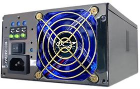

Какой выбрать блок питания для компьютера.

Покупая компьютер в Минске на сайте с оптимальной конфигурацией, перед нами становиться сложная задача по выбору блока питания нужной мощности. Вся трудность в том, что
мощность блока питания не зависит от производительности компьютера, а зависит от суммы потребляемой энергии каждого элемента компьютера. Энергию
потребляют все: будь-то такие “важные” элементы как процессор, жесткий диск или периферийные - мышь, наушники, принтер. И все эти потребители получают
энергию от блока питания. Нам остается только примерно посчитать суммарную мощность и выбрать корпус с нужным блоком питания. Обратите внимание, что
данный расчет относится только к недорогим компьютерам среднего класса, то есть к системным блокам стоимостью до 1000 у.е.
Примерная номинальная потребляемая мощность элементов выглядит следующим образом:
1.Потребляемая мощность современных процессоров в пределах от 60 до 120 Ватт.
Например четырех ядерные процессоры Phenom от AMD и Сore 2 Quad от Intel отличаются прожорливостью 80 - 130 Ватт, а интеловские процессоры на новом
1155 сокете - наоборот низким потреблением для своей производительности.
Не забудьте накинуть 3-5 Ватт на кулер, охлаждающий процессор.
2.Потребление материнских плат практически не изменилось еще с поколения 2005 года и лежит в пределах 20 - 40 Ватт.
3.Потребление дисков: HDD - 5 -12 Ватт, оптические (DVD-rom) - 10 -15 Ватт.
4.Потребление оперативной памяти зависит от количества планок и числа чипов на этих планках. Если на планке стоит 4 чипа - примерно 4 Ватта, 8
чипов - 6 Ватт, 16 чипов - 13 Ватт. В скоростных планках, таких как PC-16000 DDR3-2000 - может доходить до 20 Ватт.
5.Потребляемая мощность видеокарт - от 20 и в среднем до 150 Ватт. Например, популярная GeForce GT240 потребляет всего 40W, хотя некоторые мощные
экземпляры доходят до 220 Ватт.
6.Стоит также накинуть на потребление портов ввода/вывода - от 8 до 10 W, и Ватт 5 на дополнительный вентилятор для корпуса.
Теперь мы имеем представление о номинальной мощности потребления, то есть в режиме обычного пользования. Но есть так же и режим пиковой либо
максимальной мощности. Предлагаю обратиться к живому примеру, к популярному
Игровому компьютеру Core i5 2400. Потребляемые мощности будут
следующие: Процессор - 125W, в режиме разгона (+10%) 138W и 5W на кулер, материнская плата - 30W, HDD - 10W, оптический привод - 12W, две планки
по 2Gb 6х2 = 12W, видеокарта - 75W, в режиме разгона (+15%) 87W , на порты и все остальное - 15W. В результате мы получаем 284W в номинальной
мощности и 309W в номинальной мощности при режиме разгона. При пиковой мощности данные показатели увеличиваются максимум на 30%, т.е. данная
конфигурация потребит 402 Ватта при максимальном разгоне и при максимальной загруженности всех компонентов компьютера. В таких режимах компьютер
работает очень редко, а может и вообще никогда не работать, ведь Вы не часто в “разогнанном” режиме будете одновременно записывать DVD диск,
переписывать информацию с внешнего HDD на жесткий диск, конвертировать видео и играть в требовательную игру.
Читайте также:
Водяная система охлаждения компьютерной техники.
Твердотельный SSD накопитель, преимущества и недостатки.
Следующая статья:
Разблокирование процессоров AMD. Мифы и реальность.